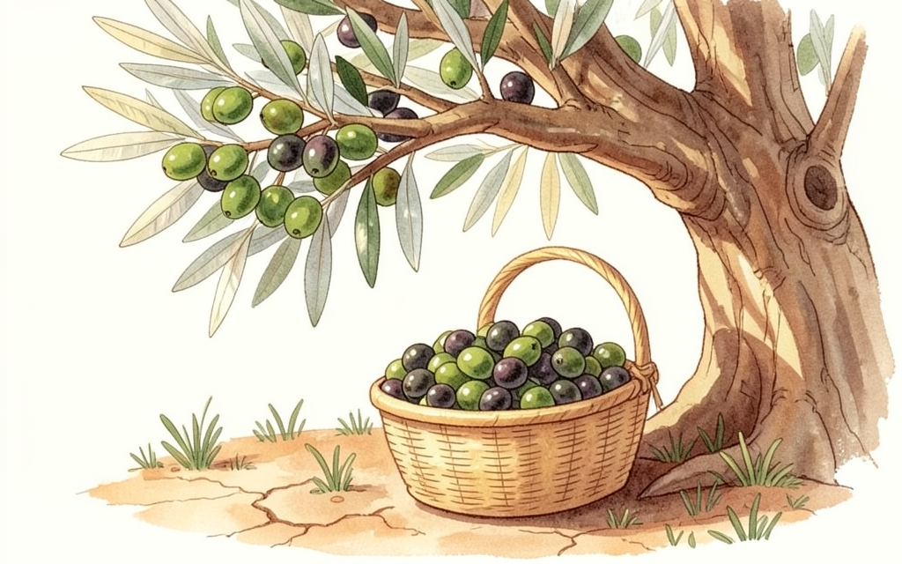
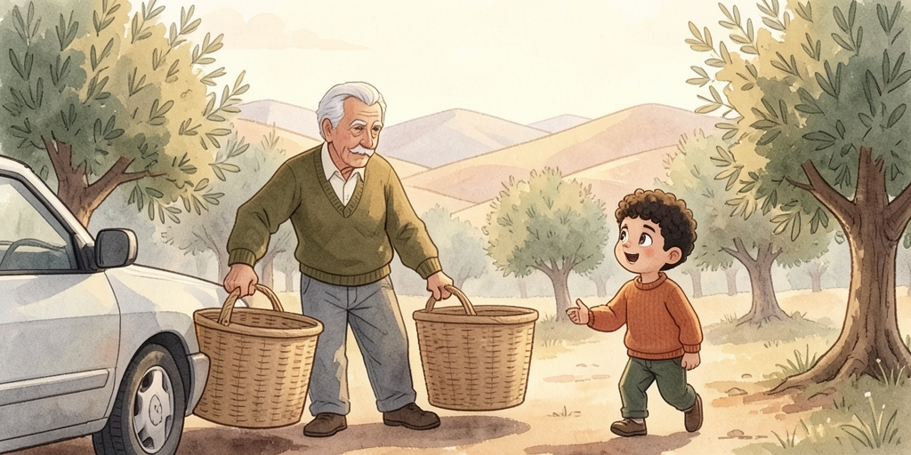
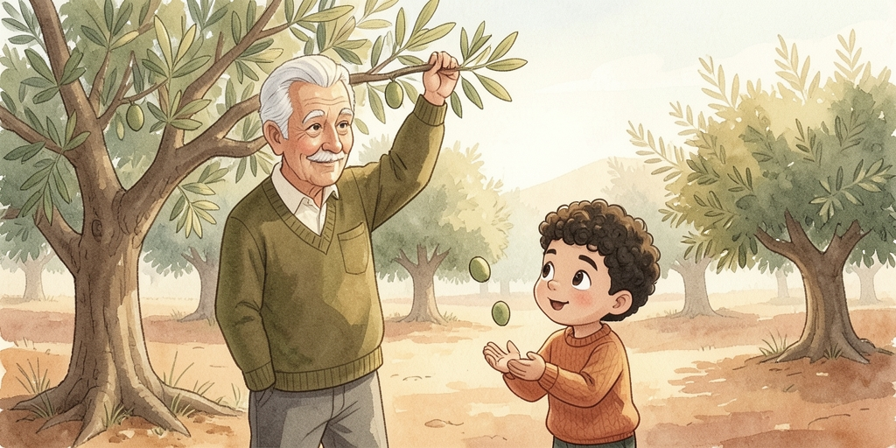
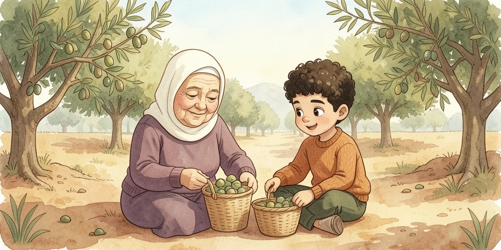
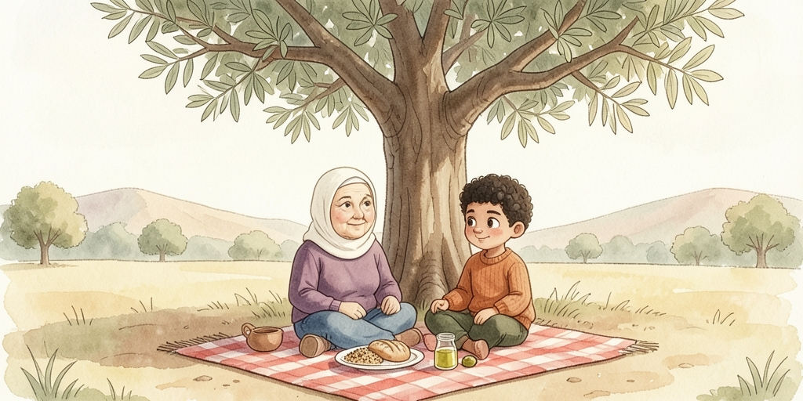
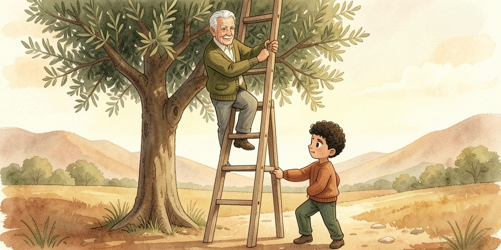
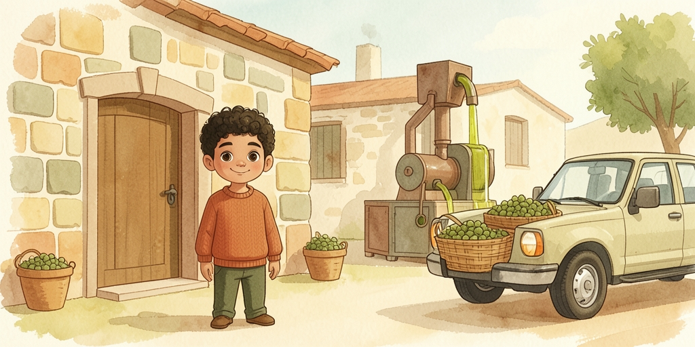
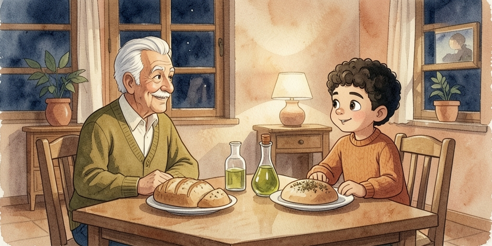

A day on the family's land, picking olives with Seedo and Teta. From here on the chat alphabet changes slightly — and you meet بدّي / لازم / ممكن, the three words that let a verb drop its بـ altogether.
| أرض | ard | land, a plot of land |
| شجرة زيتون | shajarit zeetoun | an olive tree · pl. شجر زيتون |
| سلة | salle | basket · pl. سلال salaal |
| زيت | zeet | oil |
| قطف | qataf | he picked (olives, fruit) |
| معصرة | ma3sara | the press, where the oil is made |

الصبح بدري، طلعت عيلة سامي عالأرض يلي بره القدس، وين شجر الزيتون يلي زرعه سيدو من زمان.
سيدو قال وهو بيفرغ السلال من السيارة:
«اليوم لازم نقطف الزيتون كله قبل ما تبلش الشتوية.»
سامي حابب يساعد بس ما بيعرف يقطف، فسأل:
«سيدو، كيف بدي أمسك الغصن؟»
Early in the morning, Sami's family went out to the land outside Jerusalem, where the olive trees Grandpa planted long ago stand. Grandpa said while unloading the baskets from the car: "Today we have to pick all the olives before the rains start." Sami wants to help but doesn't know how to pick, so he asked: "Grandpa, how do I hold the branch?"

سيدو ضحك وقاله: «مش صعبة يا سيدي. حط ايدك تحت الغصن، وامسك الزيتونة برفق، ولفها لحد ما تطيح.»
سامي جرب مرة، مرتين... وبالثالثة طاحت زيتونة بايده!
صرخ: «سيدو! قطفتها! شفتها كيف طاحت؟»
Grandpa laughed and said to him: "It's not hard, my dear. Put your hand under the branch, hold the olive gently, and twist it until it falls." Sami tried once, twice... and on the third try an olive fell into his hand! He shouted: "Grandpa! I picked it! Did you see how it fell?"

تيتا وسامي قعدوا يقطفوا سوا، وحطوا الزيتون بالسلال شوي شوي.
تيتا قالت: «شايف؟ لما نشتغل مع بعض، السلال بتمتلي أسرع!»
بعد شوي صارت عندهم أربع سلال مليانة، وسامي كان مبسوط منهم كتير.
Grandma and Sami sat picking together, filling the baskets with olives bit by bit. Grandma said: "See? When we work together, the baskets fill up faster!" After a while they had four full baskets, and Sami was very pleased with them.

لما تعبوا، قعدوا تحت شجرة كبيرة ياكلوا.
تيتا فتحت الكيس وقالت: «تعال كل يا سيدي، جبتلك خبز وزعتر وزيتون.»
سامي قال: «تيتا، عطيني شوية خبز كمان، وحطيلي زيت زيادة فوقه!»
تيتا ضحكت وعطته الخبز وقالت: «كول صحتين، بس خلي مكان للعصير كمان!»
When they got tired, they sat under a big tree to eat. Grandma opened the bag and said: "Come and eat, my dear, I brought you bread, za'tar, and olives." Sami said: "Grandma, give me a bit more bread, and put extra oil on top for me!" Grandma laughed, handed him the bread, and said: "Enjoy — but leave room for the juice too!"

بعد الأكل، سيدو قرب من شجرة طويلة وقال:
«هاي الشجرة أطول من الباقي، بدي السلم.»
سامي قال: «سيدو، ممكن أمسكلك السلم وانت طالع؟»
سيدو ابتسم وقال: «أكيد، بس خلي بالك منيح، هاي الشغلة مش لعبة.»
After eating, Grandpa went up to a tall tree and said: "This tree is taller than the rest, I need the ladder." Sami said: "Grandpa, can I hold the ladder for you while you climb?" Grandpa smiled and said: "Sure, but pay close attention, this job isn't a game."

لما خلصوا، حملوا السلال كلها عالبيكب ورايحين عالمعصرة.
سيدو قال: «هلق بدنا نحول الزيتون لزيت. هاد الشغل بياخد وقت، بس النتيجة بتستاهل.»
سامي شاف المعصرة أول مرة، والزيت الأخضر طالع من المكبس، فسأل:
«سيدو، من وين جاي هالريحة الحلوة؟»
When they finished, they loaded all the baskets onto the pickup and headed to the press. Grandpa said: "Now we turn the olives into oil. This work takes time, but the result is worth it." Sami saw the press for the first time, with green oil coming out of it, so he asked: "Grandpa, where's this lovely smell coming from?"

بالليل، رجعوا عالبيت وايديهم لسا فيها ريحة الزيتون.
تيتا حطت زيت جديد وزعتر عالطاولة، وقالت: «هاد أول زيت هالموسم، غمسوا فيه خبز وقولوا شو رأيكم.»
سيدو نظر لسامي وقال: «هاي الأرض من جدي لأبوي، ومن أبوي إلي، وبكرة رح تصير إلك انت. خليك دايما قريب منها.»
At night, they went back home, their hands still smelling of olives. Grandma put fresh oil and za'tar on the table and said: "This is the first oil of this season, dip some bread in it and tell me what you think." Grandpa looked at Sami and said: "This land came from my grandfather to my father, and from my father to me, and one day it will be yours. Always stay close to it."
Land, trees, and the work of picking.
| يلي | yalli | who, which, that — the all-purpose relative |
| الشتوية | ish-shitwiyye | the rainy season, "the cold months" |
| حابب | 7aabib | wanting to, would like to · f. حابة 7aabbe |
| برفق | bi-rifq | gently |
| طاح / تطيح | taa7 / titee7 | to fall — not وقع |
| مليانة | malyaane | full (f.) · m. مليان malyaan |
| زعتر | za3tar | the herb mix — also the plant itself |
| عطيني | 3atteeni | give me |
| حطيلي | 7attili | put ... for me |
| زيادة | ziyaade | extra, more (of something) |
| باقي | baaqi | the rest, what's left |
| خلي بالك | 5alli baalak | pay attention, watch out |
| مش لعبة | mish li3be | it's not a game — take it seriously |
| معصرة | ma3sara | the press, where oil is made |
| بتستاهل | bitistaahal | it's worth it |
| موسم | mawsim | season (harvest season, in context) |
| غمسوا | 8amsu | dip! (pl. imperative) · غمس 8amas to dip |
| بكرة | bukra | tomorrow — or "one day", in the future |
| من ... لـ | min ... la | from ... to — for a chain: من جدي لأبوي |
Verbs that drop their بـ, and how to hook a person onto a verb.
After these three, the next verb loses its بـ — almost like English "to" + verb:
| بدي | biddi | I want (to) |
| بدك | biddak / biddik | you want (m. / f.) |
| بدو | biddo | he wants |
| بدها | bidha | she wants |
| بدنا | bidna | we want |
| بدكم | bidkom | you (pl.) want |
| بدهم | bidhom | they want |
لازم and ممكن never change form: لازم تروح laazim trou7 you must go · ممكن نيجي mumkin niji we could come.
| عطيني | 3atteeni | give me |
| حطيلي | 7attili | put ... for me |
| جبتلك | jibtillak | I brought (it) for you |
| قطفتها | qataftha | I picked it (f.) |
| عطته | 3atetto | she gave him/it |
Put أ on the front of most adjectives to compare, and say من for "than":
طويل tawiil tall → أطول atwal taller ·
حلو 7ilu nice → أحلى a7la nicer ·
كبير kbiir big → أكبر akbar bigger.
هاي الشجرة أطول من الباقي hayy ish-shajara atwal min il-baaqi —
this tree is taller than the rest.
Use بدّي / لازم / ممكن and the attached pronouns from this book. Don't peek at the answers until you've had a go.
١) أنا ____ أروح عالأرض بكرة. (I want to)
٢) ____ تحط ايدك تحت الغصن قبل ما تقطف. (You must)
٣) ____ تساعدني بالسلة؟ (Can you...?)
٤) هاي الشجرة ____ من الباقي. (taller)
١) Give me the bread, please.
٢) I saw it (the olive) fall.
٣) Can I hold the ladder for you?
٤) This land is bigger than ours.